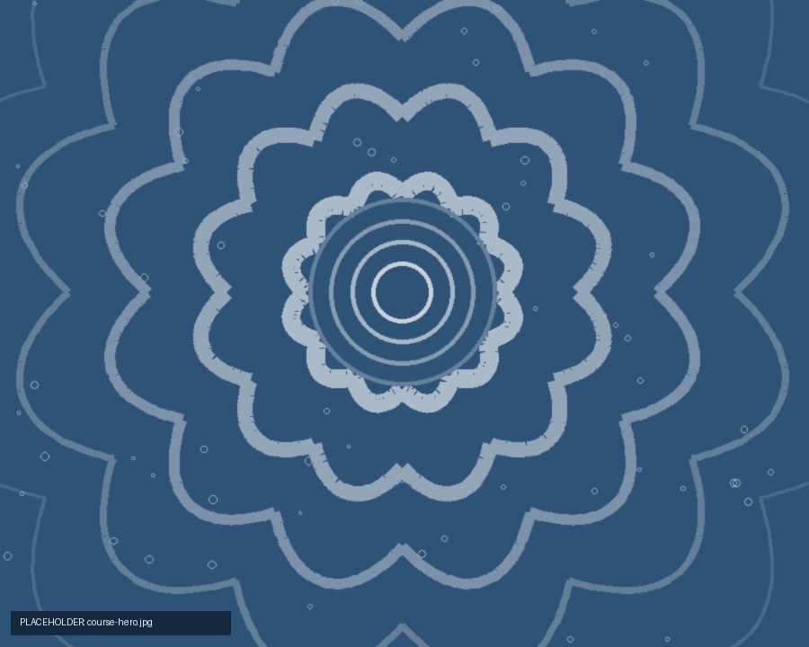
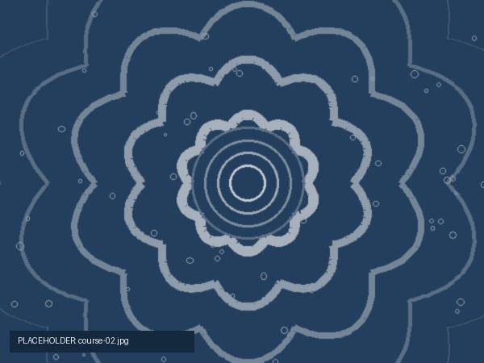
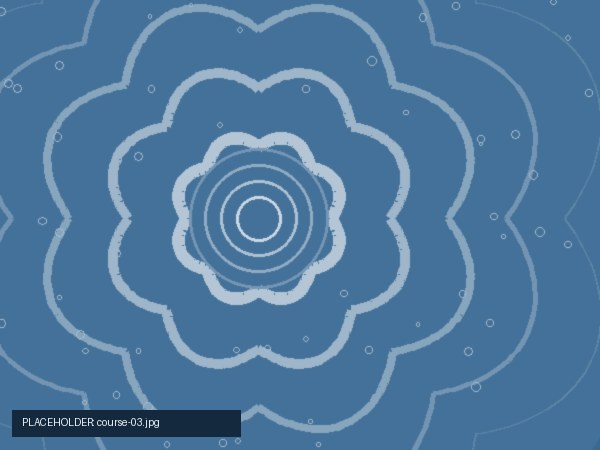
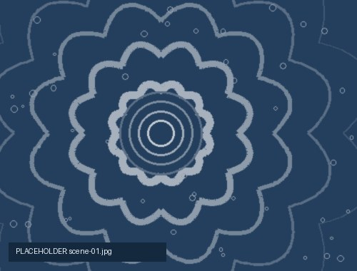
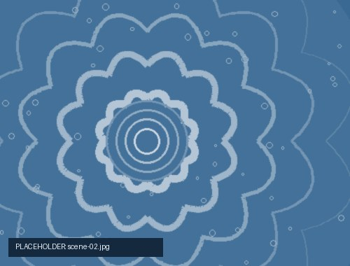
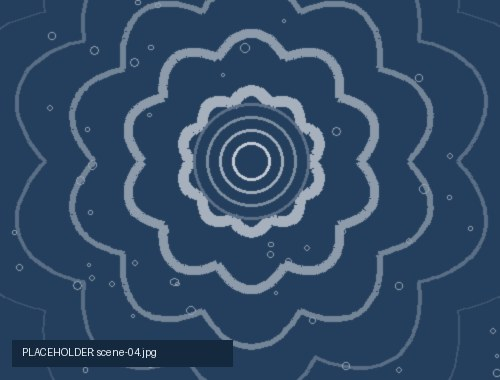

我们的课堂不是秀场，而是染坊：真实的染缸、真实的蓝靛、真实的老师傅。你会从设计一块布开始，经历浸染与等待，最后亲手拆开属于自己的谜底。
无论是孩子、学生还是成年访客，都能在这里获得一段安静专注的手作时光，并把成品带回家。
根据不同人群与场景设计课程，时长与深度可灵活组合。

家长与孩子合作完成一方扎染手帕，在动手里读懂非遗。适合 5 岁以上家庭。

面向中小学与高校团体，含非遗讲堂＋完整扎染实践，配套研学手册。

深度的成人手作课程，可选围巾、桌旗等大件作品，享受完整染布时光。
从文化到成品的完整动线，5 个环节层层递进。
了解墩头蓝的前世今生与客家织染故事
构思属于自己的蓝白布局与图案
学习折叠与缝扎手法，定下纹样筋骨
亲手把布浸入蓝靛缸，见证变色的魔法
拆线揭纹、晾晒定色，成品当场带走
我们与学校、社区、企业和文旅机构长期合作，扎染体验可灵活嵌入研学、团建、市集与展览等活动，支持定制方案与上门开课。




课程需提前预约，以便我们为你备好材料与染缸。请留意以下事项，如有疑问欢迎随时联系我们。